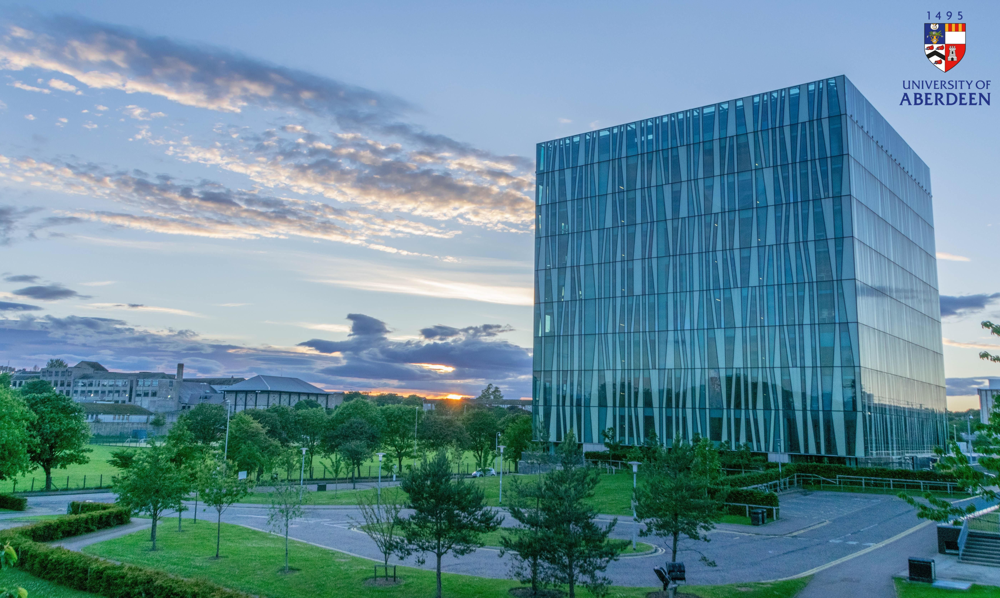

About Myself
Born and raised in Romania. At the age of 18, I graduated from high school as one of the top 10. At the National Exam (the Baccalaureate), I placed in the top 30.
I came to UK and studied a degree in Electrical and Electronic Engineering at the University of Aberdeen. Eventually, I graduated 5 years later with an honours degree.

I chose to study EEE for the only reason of how many doors could be opened in this industry sector. I started the degree with high hopes and motivation, only to be shocked of the broadness of the degree. But even so, I did not back down and did my best.
The life at university was filled with opportunities if one had the time and willingness. I had the pleasure to be part of Tau Racing team in 2017 as the Head of Electronic Systems. I learnt here how a whole team that deals with different departments comes together and the importance of it.
But there is so much one can learn and gain experience in 5 years. I am not going to lie, I did learn a lot about the engineering industry, how diverse it is, how many disciplines it can encompass to complete a project, how complex it is, yet delicate at the same time. It was an experience worth of going through.

Although I didn't get experience in engineering as much as I wanted, I did get experience in programming and IT sector. The foundation started when I studied courses that taught C/C++ and Phyton. That experience was slowly expanding, without realising, by completing projects for other courses by programming integrated circuits. By the time I graduated, I realised that I was enjoying the little and big challenges that came from coding.
When it was time to look for a job where I could show my skill, I realised I didn't have the experience required to become an engineer, nor did I have a portfolio to show my coding abilities. My first step in proving myself was trying to build a video game from scratch, after all, I already knew how to code.

I quickly found out that building a game from scratch was not something I could afford to undertake, and that is due to two reasons: resources and time. I don't have hardware good enough to build a game without worries, and I can't afford to spend a minimum of a year to finish the project (that was my predicted time).
Thus, my search to what I could do to build my portfolio began. The more I researched, the more I realised how narrow-minded I was on focusing only on the video game. I decided to focus on a programming language and build from there. My choice, was Python.

My portfolio slowly grew with each small project I created. The projects I returned to, became more complex as I learnt more about Python. Eventually, I reached the point where I learnt about web development, an industry I never considered before as I had the impression that it would be too easy for me if I tackled it.

Web development is more complex than I thought. I only knew about the front end, as I touched it a bit in high school, but the back end was entirely new to me. As I developed my skills in web development, I started to enjoy the beauty of it. I enjoy the use of multiple tools, languages and the creation process.
Now here I am, with a personal website developed to show my CV and my portfolio to everyone who is interested to know about my skills and abilities.